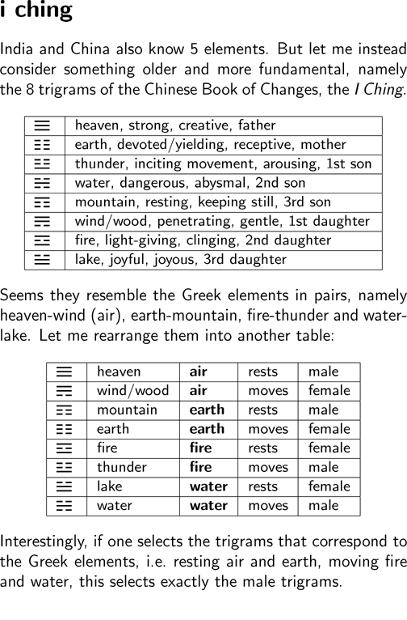
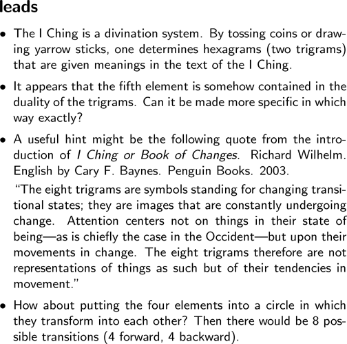

i i i i i i i i i i i i |
   i ching India and China also know 5 elements. But let me instead consider something older and more fundamental, namely the 8 trigrams of the Chinese Book of Changes, the I Ching. heaven, strong, creative, father earth, devoted/yielding, receptive, mother thunder, inciting movement, arousing, 1st son water, dangerous, abysmal, 2nd son mountain, resting, keeping still, 3rd son wind/wood, penetrating, gentle, 1st daughter fire, light-giving, clinging, 2nd daughter lake, joyful, joyous, 3rd daughter Seems they resemble the Greek elements in pairs, namely heaven-wind (air), earth-mountain, fire-thunder and water-lake. Let me rearrange them into another table: heaven air rests male wind/wood air moves female mountain earth rests male earth earth moves female fire fire rests female thunder fire moves male lake water rests female water water moves male Interestingly, if one selects the trigrams that correspond to the Greek elements, i.e. resting air and earth, moving fire and water, this selects exactly the male trigrams. leads - The I Ching is a divination system. By tossing coins or drawing yarrow sticks, one determines hexagrams (two trigrams) that are given meanings in the text of the I Ching. - It appears that the fifth element is somehow contained in the duality of the trigrams. Can it be made more specific in which way exactly? - A useful hint might be the following quote from the introduction of I Ching or Book of Changes. Richard Wilhelm. English by Cary F. Baynes. Penguin Books. 2003. "The eight trigrams are symbols standing for changing transitional states; they are images that are constantly undergoing change. Attention centers not on things in their state of being---as is chiefly the case in the Occident---but upon their movements in change. The eight trigrams therefore are not representations of things as such but of their tendencies in movement." - How about putting the four elements into a circle in which they transform into each other? Then there would be 8 possible transitions (4 forward, 4 backward). |